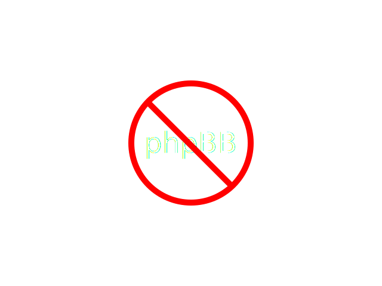

Tired of all AoPS Blogs
Looking the same?
WE ARE TOO.
But
Now it's outdated by 3 or 4 years.
So what to do?
Should we
Ditch XHTML 1.1 in favor of HTML5?
Update the interface to a clean and modern design?
Make navigation more accessible and easy to use?
Leave PHPBB and implement a custom Discuss forum instead?
Add a development window where you can code in real time?
Finish the 'Themizer', a machine that takes colors as input and outputs CSS?
What to do?
No need to decide - we did everything (dojo).

HTML5?
 Check.
Check.
Modern Design?
MD
Check.
Navigation?
 Check.
Check.
phpBB?

Absolutely not.
Development window?
Need you ask?
Finish the long-suffering Themizer?
What did you expect?
Are you itching to try it out right now?
Good.
Hit the source and start!
everythingdojo.com
(No need for applause.)
*